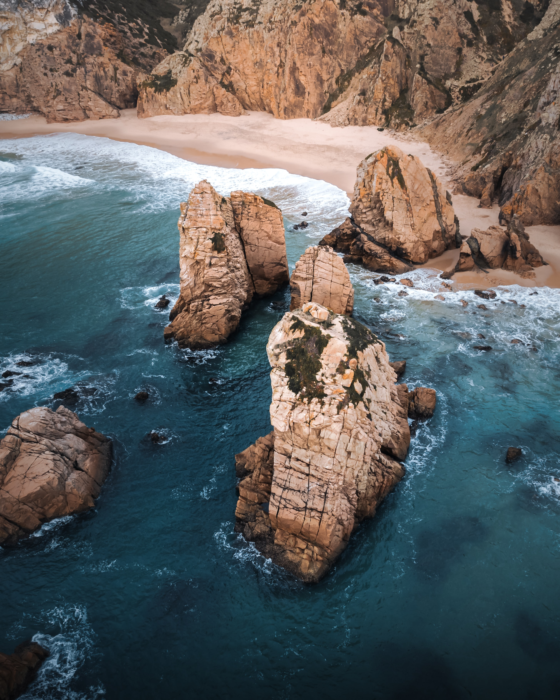

The right image size will be used by the browser based on the device of the user.
Above the fold, progressive jpg is used.

Above the fold, we use webp loaded lazily.
Photo by Rudi West on Unsplash
First step image (@1066w) is bigger than original size WebP, so step is ignore.


(needs a fix for sizes)